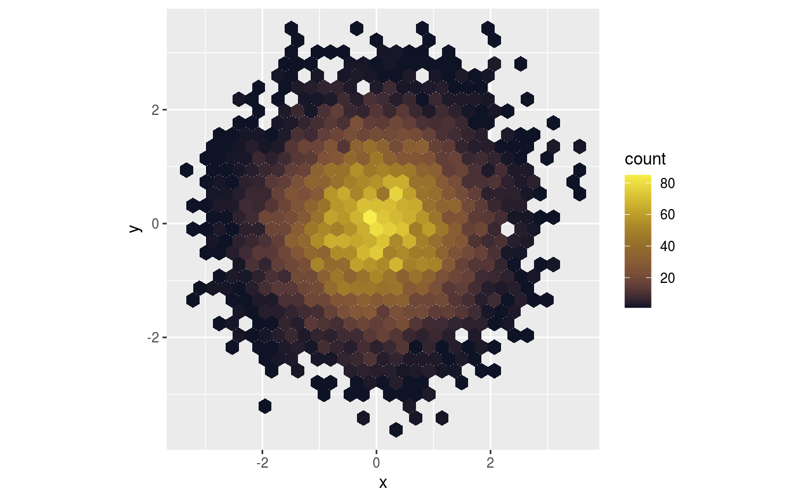
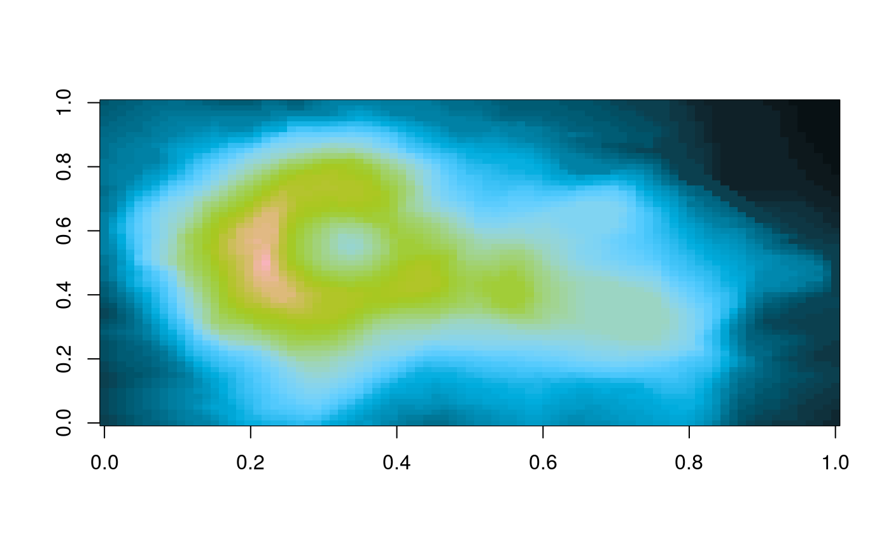

This function creates a vector of n equally spaced colors along the
'fish colour map' of your selection
fish( n, alpha = 1, begin = 0, end = 1, direction = 1, option = "Centropyge_loricula" ) fish_pal( alpha = 1, begin = 0, end = 1, direction = 1, option = "Centropyge_loricula" )
| n | The number of colors (\(\ge 1\)) to be in the palette. |
|---|---|
| alpha | The alpha transparency, a number in [0,1], see argument alpha in
|
| begin | The (corrected) hue in [0,1] at which the fish colormap begins. |
| end | The (corrected) hue in [0,1] at which the fish colormap ends. |
| direction | Sets the order of colors in the scale. If 1, the default, colors are ordered from darkest to lightest. If -1, the order of colors is reversed. |
| option | A character string indicating the fish species to use. |
fish returns a character vector, cv, of color hex
codes. This can be used either to create a user-defined color palette for
subsequent graphics by palette(cv), a col = specification in
graphics functions or in par.
Semi-transparent colors (\(0 < alpha < 1\)) are supported only on some
devices: see rgb.
library(ggplot2) library(hexbin) dat <- data.frame(x = rnorm(1e4), y = rnorm(1e4)) ggplot(dat, aes(x = x, y = y)) + geom_hex() + coord_fixed() + scale_fill_gradientn(colours = fish(128, option = 'Ostracion_cubicus'))